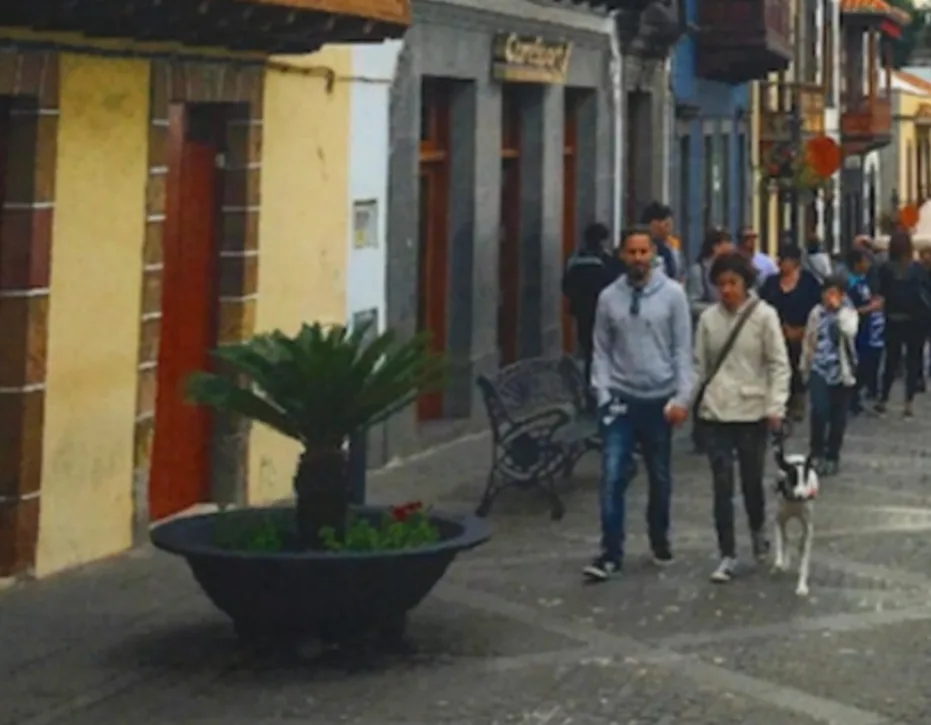

Un relato policial escrito a partir de una foto — tres páginas, sin pulir a propósito, porque los errores son el material. La profe lo corrigió mientras hablábamos, y de sus marcas salieron las tarjetas ②, ③ y ④. Acá está el texto con sus correcciones encima: rojo tachado es lo que yo escribí, verde es lo que puso ella, las pastillas ámbar son sus notas al margen, y violeta es una marca que no logro leer con seguridad.
Los dos de la foto
Una historia sobre los dos, lo siento, los tres que se aparecen en la foto.
Me llamo Juan Corona, soy detective en el departamento de policía de la ciudad de Buenos Aires en el país de Argentina. Mi trabajo consiste en perseguir y atrapar a los delincuenciasdelincuentesatrapar a los delincuentes que trafican en ? los animales robados. Hace dos meses recibí un soplo sobre dos personas que fingían como turísticosser turistasfingían ser turistas para que mover animales por las fronteras entre Argentina y Brasil.para + infinitivo · para que + subjuntivo Mi informante me dijo «yo sé de dos personas que se visten como turísticosturistas y roban a las mascotas de la gente en Buenos Aires. Entonces, llevan a los animales a Brasil para que ganar mucho dinero en el mercado negro» Fue un pedazo de información que podría utilizar para que romper un anillocírculo ? del crimen pero necesitaba más. Si pudiera encontrar1 a una persona que teníatuviera una mascota robada, quizá podría atrapar estos dos ladrones. (tipo dos de los condicionales)
Mi pregunta 1
acá tengo una pregunta sobre este verbo, cuál es el verbo más apropiado en este contexto, buscar o encontrar.
Tengo que buscar · Necesito encontrar — buscar es el proceso; encontrar, el resultado. En sus apuntes agregó otro buscar, el de ir a recoger algo: Tengo que buscarla en lo de mi mamá.
Mi primera pista me vino de una queja sobre un perro perdido que desapareció de un parque en el centro de la ciudad. FueronErandescripción las diez de la noche y la queja dijo «una mujer que caminaba por el parque con su perro fue detenidoa por dos personas que tomaron a su perro» parecía ser un caso que combinarcoincidíao combinaba por completo con mi caso.2 El día siguiente me encontraría con esta mujer y me enteraría más del crimen.
Mi pregunta 2
(quería decir algo como, it seemed to be a case that matched completely with my case)
✓ — la idea se entiende; lo que corrigió fue el verbo: coincidía, o combinaba.
A las ocho de la mañanapuntual me encontré con una señora muy triste llamada Marta Verde, me dijo «detective, fue horrible, tan horrible. Mi peorpobre amiguito, no puedo parar de llorar desde que se me perdió mi perro pequeño» le pregunté sobre la descripción de los dos y me contó «pues, uno de los dos, el hombre, eratenía como seis pies de altura con pelo negro y una barba y un bigote, ambos con un poco de gris, llevaba un abrigo pequeño, como un hoodiebuzo, que fueera celeste, también llevaba vaqueros azules cony zapatillas de tenis, creo que esosesas eran negroas como elloslas de Nike. ¡vaya! TuvoTenía un par de gafas negras que llevaba colgadas enfrente del hoodiebuzo» Bueno, ¿cuántos años tenía? «no estoy seguro, quizá tenga veinte o treinta años, la noche estaba muy oscuroa y actuaron muy rápido»
Bueno, señora, y la mujer, ¿cómo parecíase veía? «pues, era más joven que él, probablemente como veinticinco años, más o menos, llevaba un abrigo blanco con una cartera con una correa colgada sobre su hombro, como una mochila pequeña, también llevaba pantalones de camuflaje, marrón y verde como en el ejército, y zapatos blancos. Era más baja que él, como cinco pies de altura. tenía pelo castaño oscuro y ambos parecían extranjeros» Bueno, y tu perro, ¿cómo parecía?
«mi perrito!, le extraño tanto mucho, porfa, porfa, tienestenésrioplatense que encontrarlo3, detective» Bueno, dame los detalles de sutudame = tu · deme = su mascota. «pues, es de tamaño medio (talla no es correcto acá? Solo usado con ropa?)✓ sí, casi todo blanco excepto su cabeza con pelaje negro alrededor de sus ojos, y tiene un collar con una etiqueta con su nombre, ManchaManchita» Bueno, voy a hacer lo que puedo hacer.
Mi pregunta 3
ahora creo que verlo, si quiero decir que al final tengo algo depués de una búsqueda, se usa «encontrar». Sin embargo, si quiero subrayar el acto de la búsqueda, el processso entero, se usa «buscar». Por ejemplo, la frase, tienes que encontrarlo, no es lo mismo con la frase, tienes que buscarlo. La émfasisEl énfasis está en puntos distintos, uno está en el final, encontrar, y otro, es un processso. ¿Tengo sentido?
Solo marcó la ortografía; la explicación no tiene respuesta escrita. Es la misma división que ella dio en la pregunta 1, y la usé bien en el relato.
En aquello momento pensé que tuvetenía bastantes pruebas para encontrar estos ladrones de mascotas. TuveTenía descripciones, motivos, hasta una mascota que estabahabía sido robadapluscuamperfecto de indicativoser robado por alguien ni siquiera un día antes. Pero, quélo que necesitonecesitaba fueera una foto de los dos.
Por suerte, el día siguiente recibí una llamada de un dueño de una de las tiendas que queda a lo largo de la calle principal cerca del parque donde hay muchos turísticosturistas y muchos perros. Me dijo que tuvotenían ? una foto de dos personas que habían robado✓ a una mascota de otro turísticoturista la semana anterior. FueEra mi gran oportunidad!
Me encontré con un hombre mayor en su tienda de recuerditos, un señor Martinez. era un cascarrabias con un rostro que había visto mucho más tiempo que teníahabía vivido más años de los que teníao: con un rostro que había visto más de lo que había vivido, pero me mostró una foto con dos personas y un perro que parecióparecía lo mismo conigual que la descripción provistoa de la señora Verde. En ese momento, sabía que tenía a mis ladrones.tenía a mis ladrones = OD = los tenía Todo yolo que tenía lo que hacer fueera encontrarlos.4 Contacté elal noticiero y lolele = OI envié todos los detallesOD sobre mi caso para que mostraran✓ la historia por ella radio y la televisioón.

Mi pregunta 4
al principio escribí la frase, todo lo que tenía que hacer fueera encontrarlos, pero no pareció correcto así que lo cambié? Quería decir en inglés «all i had to do was find them».
Lo corrigió dentro de la pregunta: Todo lo que tenía que hacer era encontrarlos. La primera versión estaba más cerca; al cambiarla metí un yo y un lo en el lugar equivocado.
Por suerte conseguí otro soplootra pista de una persona que había visto✓ ✓ el noticiero la noche anterior sobre ladrones de mascotas y me dijo «Señor, vio a sus sospechosos y eso peorpobre perrito llamado Mancha, ahora se quedan en un Aire B&B al lado de mi apartamento,departamento (solo en Argentina) 4A en el edificio de Gran Vuelta del Generalísimo de San Martín en la avenida de Carlos Pellegrini, porfa, ¡date prisa! »
Qué suerte! De inmediato, llamé a la policía en la ciudad de Rosario y transmitieron todos los detalles y después de solo una hora arrestaron a mis ladrones. Esa noche regresé5 a un perrito asustado al hogar✓ ×4 y la señora Verde me dijo «muchas gracias, ? detective por su gran trabajo, nunca creíacreíopinión cerradaHECHO PUNTUAL que vieraiba a ver a mi amiguito otra vez, estoy tan feliz»
Mi pregunta 5
regresar, devolver, llevar, entregar. ¿Cuál es el verbo preferido acá?
✓ regresar · ✓ devolver · llevar → llevar de regreso · ✓ entregar — sirven los cuatro; llevar solo necesita el de regreso.
Mis preguntas sobre el le
tengo algunas preguntas sobre el tema abajo, leí la primera frase y estaba confundido.
Le encuentro sentido a esto
Le cambié el aceite al coche — cuál es la diferencia entre estos.. cambié el aceite del coche
Le limpié la alfombra a mi madre — o, limpié la alfombra de mi madre
Le acaricié la cabeza al carpincho — acá, una parte de cuerpo, hay que usar la estructura, lo entiendo.
Le veo dificultades — abstracto, no estoy seguro de que lo signifique
Le puse sal a la sopa — o, puse sal en la sopa
entiendo la idea con partes del cuerpo, me duele la cabeza o le toqué la brazo a mi padre o me queda bien la ropa, la gramática con partes del cuerpo y roba pero, no estoy seguro de que lo entienda en casos más abstracto o casos como la frase con el coche.
Resaltó en amarillo las dos abstractas y no escribió nada: lo vimos hablando. Lo que dijo — incluido que nadie pone la sal a la sopa — está en la tarjeta ③.
Qué fallé, agrupado
Un error suelto es un descuido; el mismo error dos o tres veces es un hábito. Toca una fila para que se enciendan sus casos en el texto.
| Tipo | Veces | La regla |
|---|---|---|
| Pretérito por imperfecto | 11 | Descripción y estado de fondo van en imperfecto: eran las diez, era celeste, tenía gafas, tenía pruebas, era mi gran oportunidad, lo que necesitaba era una foto. |
| Calco del inglés | 8 | hoodie → buzo, combinar → coincidir, peor (poor) → pobre, ¿cómo parecía? → ¿cómo se veía?, lo mismo con → igual que. |
| Ortografía y género | 7 | proceso con una s; el énfasis es masculino; la radio (de radiofonía — el radio es otra cosa); televisión con tilde; Airbnb. |
| Concordancia de género | 5 | detenida, esas, negras, oscura, provista — el adjetivo sigue a su sustantivo, no al último que escribí. |
| turista / turístico | 4 | turista es la persona; turístico es el adjetivo: un lugar turístico. Invariable en género: el/la turista. |
| Artículo definido | 4 | de la gente; las de Nike. Y con un título, artículo cuando hablas de la persona: la señora Verde; sin artículo cuando le hablas: Señora Verde, ¿cómo está? |
| lo que | 4 | Un «what» que no pregunta nada es lo que: lo que necesitaba, todo lo que tenía que hacer. Y tener que + infinitivo va sin lo. |
| para + infinitivo | 3 | Mismo sujeto → para + infinitivo. Sujeto distinto → para que + subjuntivo. |
| a personal | 3 | atrapar a los delincuentes, tenía a mis ladrones, vio a sus sospechosos — personas como objeto directo. |
| vos / tú mezclados | 2 | Elegido el tuteo: dame → tu mascota. Con deme iría su. En Buenos Aires: tenés. |
| Concordancia del verbo | 2 | los tres aparecen — sin se, y el verbo en plural. |
| Verbo pronominal | 2 | vestirse como; quedarse en un lugar = to stay. El se es obligatorio. |
| Régimen del verbo | 2 | contactar a alguien: contacté al noticiero. Y traficar algo — ver Sin resolver. |
| desde que | 1 | desde + sustantivo, pero desde que + verbo conjugado. |
| ser por tener | 1 | Medidas y edad con tener (o medir): tenía como seis pies de altura. Tarjeta ④. |
| Conector | 1 | Enumeración de prendas: vaqueros y zapatillas, no vaqueros con zapatillas. |
| Subjuntivo en relativa | 1 | Si pudiera encontrar a una persona que tuviera…: dentro del «si» todo va en el mismo mundo — los tiempos coinciden (pudiera · tuviera · podría), y la persona es hipotética. Con tenía sería una persona concreta que sé que existe. |
| Palabra equivocada | 1 | la delincuencia es el fenómeno; el delincuente es la persona. |
| Demostrativo | 1 | aquello, esto, eso son neutros y van solos (eso no me gusta). Delante de un sustantivo: aquel momento, ese perrito. |
| Pluscuamperfecto | 1 | Algo anterior a otro momento del pasado → había + participio. Y un robo es un hecho, no un estado: ser robado (por alguien), no estar — había sido robada. |
| Presente por pasado | 1 | Un relato en pasado se queda en pasado: lo que necesitaba, no necesito. |
| le / lo | 1 | enviar algo a alguien: los detalles son el OD; quien los recibe es el OI → le envié. Aquí el error fue al revés que en la clase del 22. |
| Imperfecto por pretérito | 1 | Una opinión que ya se cerró va en pretérito: nunca creí — «opinión cerrada», «hecho puntual». Tarjeta ②. |
| Futuro en el pasado | 1 | Futuro visto desde el pasado: ir en imperfecto + a + infinitivo — iba a ver / fuera a ver. Tarjeta ②. |
| Preferencia regional | 1 | Soplo es correcto (dar un soplo = to tip off, coloquial); en la Argentina lo natural es pista. No es un error. |
| Modismo inglés | 1 | A face that had seen more years than its age: el español no tiene ese modismo, y lo metí a propósito para ver qué hacía ella. Lo reescribió de dos maneras; lo llano sería aparentaba más edad de la que tenía. No es un error. |
Toca la fila otra vez, o «Quitar resaltado», para apagarlo. Lo que ella no marcó quedó como lo escribí — el texto registra su corrección, no una versión perfecta. Las dos últimas filas no son errores: una es una preferencia de la región, y la otra, un modismo inglés metido a propósito.
Sin resolver
Marcas que no leo con seguridad, o cosas que quedaron a medias. Nada de esto entra al texto corregido hasta confirmarlo.
- «que trafican en los animales robados» — hay una marca sobre en, sin reemplazo escrito. En el vocabulario escribió traficar algo, sin preposición — eso apunta a borrar el en: que trafican animales robados. La otra posibilidad es traficar con.
- «un anillo del crimen» — escribió círculo al margen. ¿Reemplazo directo, o buscaba otra frase entera, como una red de traficantes?
- «Bueno, y tu perro, ¿cómo parecía?» — el primer ¿cómo parecía? lo cambió por se veía; el segundo no lo marcó. Probablemente se le pasó; no lo cambio sin preguntar.
- «Me dijo que tuvo una foto» — escribió tenían. El sujeto es el dueño de la tienda, así que se esperaría tenía. ¿Un desliz, o leyó dos personas como sujeto?
- «muchas gracias detective» — una marquita roja entre las letras de gracias, sin nada escrito. Lo más probable es la coma antes de nombrar a la persona: muchas gracias, detective. Pero es una conjetura.
- «vio a sus sospechosos y eso pobre perrito» — cambió peor por pobre pero no tocó eso. Es el mismo error que aquello momento: delante de un sustantivo va ese, y seguramente con la a personal — y a ese pobre perrito.
Departamento, apartamento, piso. Su nota no dice que departamento sea solo argentino, sino que en la Argentina es la palabra preferida. Departamento: Argentina, México, Chile, Perú, Ecuador, Bolivia. Apartamento: Colombia, Venezuela, Uruguay y casi toda Centroamérica y el Caribe. Piso: España — donde departamento confunde, porque allá es la sección de una empresa o de una universidad. Uso variable